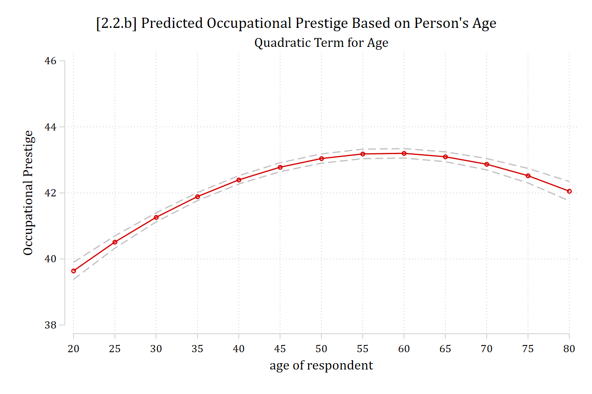
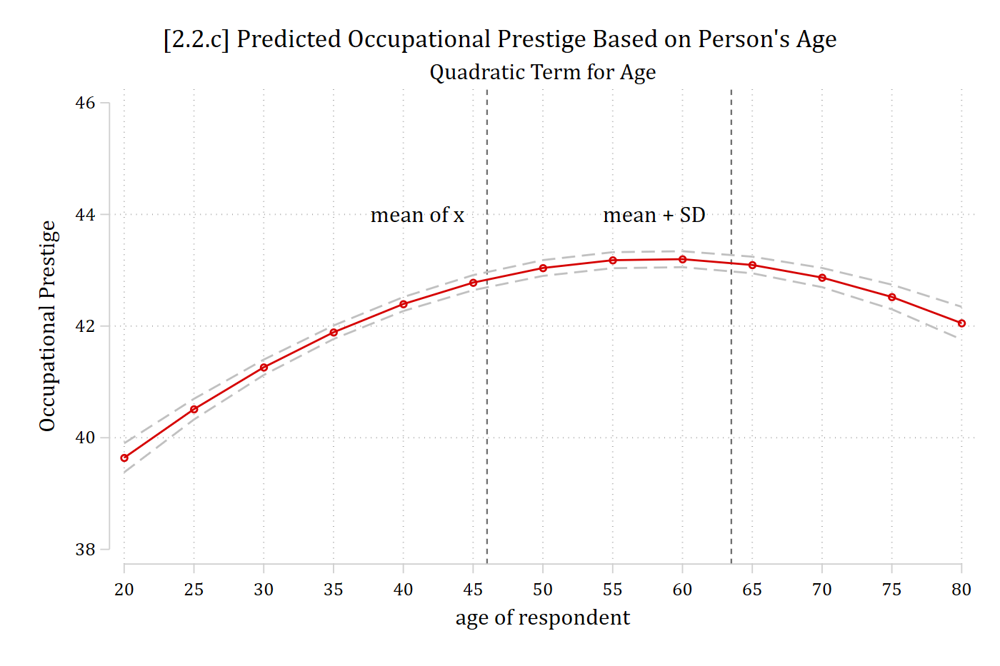
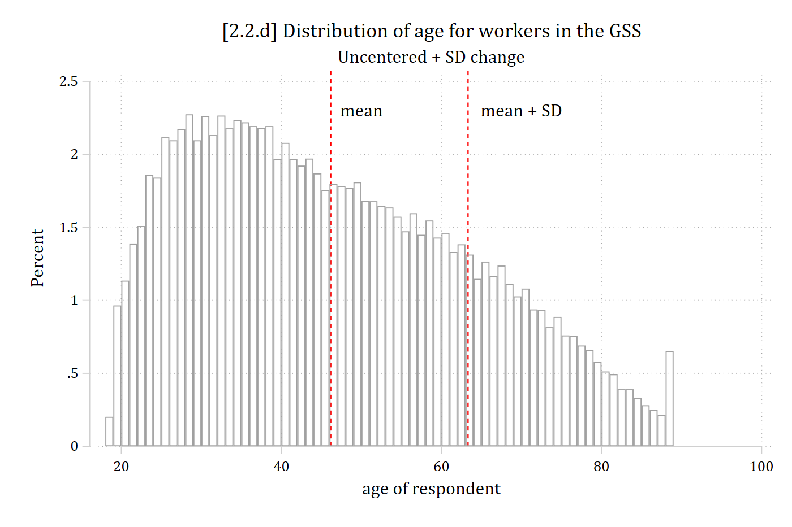
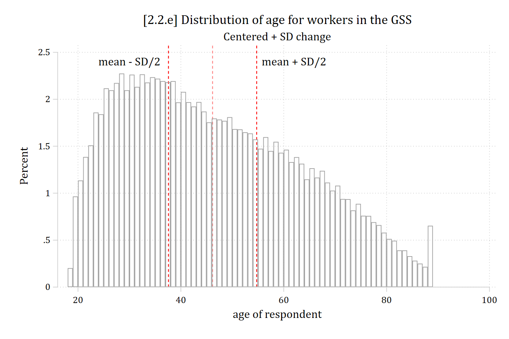
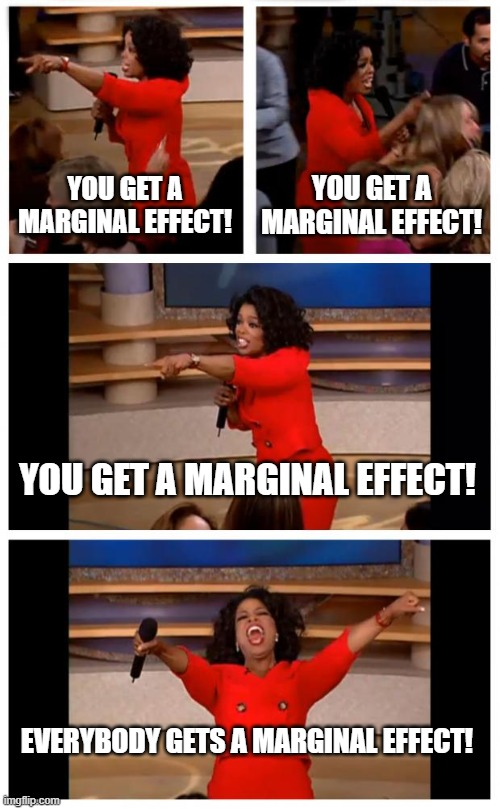
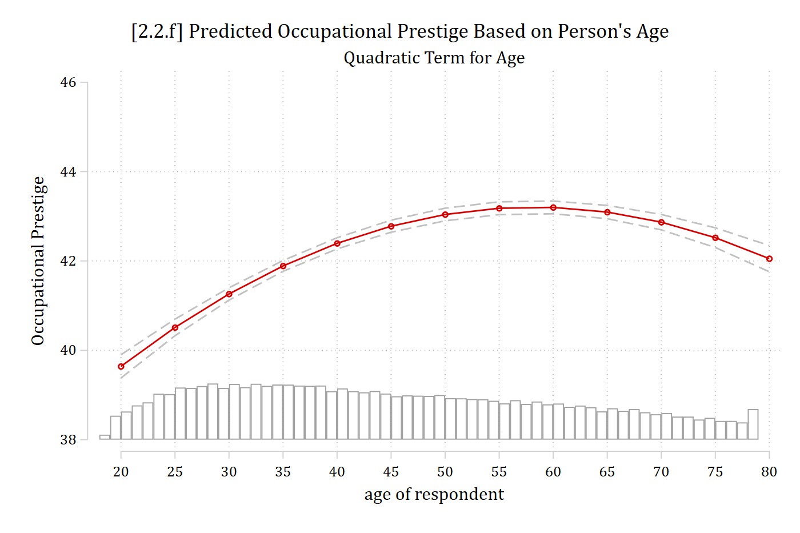

2.2 Marginal Effects with Nonlinearities
Marginal effect of xk for linear additive effects
- The size of the effect does not depend on the value of xk
- The size of the effect does not depend on the values of other IVs
Marginal effect of xk for nonlinear interactive effects
- The size of the effect does depend on the value of xk
- The size of the effect does depend on the values of other IVs
Nonlinear effects in linear regression models
- By transforming IVs or the DV or by adding polynomial IVs the effects of IVs can be nonlinear even in the linear regression model
- The x’s enter in the linear (additive) form xβ = β0 + β1x1 + β2x2 + …
- But the x’s can be transformations or polynomials of variables leading to nonlinear effects, e.g.
Square root:
\[\begin{aligned} y &= \beta_{0} + \beta_{1}x_{1} + \beta_{2}\sqrt{w_{2}} + \varepsilon \\ &= \beta_{0} + \beta_{1}x_{1} + \beta_{2}x_{2} + \varepsilon \end{aligned}\]
Polynomial: \(y = \beta_{0} + \beta_{1}x_{1} + \beta_{2}{x_{1}}^{2} + \varepsilon\)
The effect in terms of the predictions is nonlinear
Polynomials of continuous IVs
- Add a polynomial term for age
- Note if you include a higher order polynomial (e.g., age2) in a regression model you need to also include the lower order terms (here, age)
\[{occupational\ prestige}_{i} = \beta_{0} + \beta_{age}{age}_{i} + \beta_{{age}^{2}}{{age}^{2}}_{i} \ldots\]
use "https://tdmize.github.io/data/data/cda_gss", clear(cda_gss.dta | GSS 1972-2021 CDA - Categorical Data Analysis | date created 202
> 3)regress occprest c.age##c.age i.woman i.college Source | SS df MS Number of obs = 58,304
-------------+---------------------------------- F(4, 58299) = 4746.11
Model | 2797112.11 4 699278.027 Prob > F = 0.0000
Residual | 8589596.79 58,299 147.336949 R-squared = 0.2456
-------------+---------------------------------- Adj R-squared = 0.2456
Total | 11386708.9 58,303 195.302281 Root MSE = 12.138
-------------------------------------------------------------------------------
occprest | Coefficient Std. err. t P>|t| [95% conf. interval]
--------------+----------------------------------------------------------------
age | 0.284 0.017 16.988 0.000 0.251 0.317
|
c.age#c.age | -0.002 0.000 -14.751 0.000 -0.003 -0.002
|
woman |
Women | -0.159 0.101 -1.576 0.115 -0.357 0.039
|
college |
College De.. | 16.238 0.121 134.149 0.000 16.001 16.475
_cons | 31.359 0.389 80.511 0.000 30.595 32.122
-------------------------------------------------------------------------------est store opmod
est table, title("[2.2.a] Occupational prestige linear regression model") ///
b(%5.3f) star(.05 .01 .001)[2.2.a] Occupational prestige linear regression model
---------------------------
Variable | opmod
-------------+-------------
age | 0.284***
|
c.age#c.age | -0.002***
|
woman |
Women | -0.159
|
college |
College D.. | 16.238***
_cons | 31.359***
---------------------------
Legend: * p<.05; ** p<.01; *** p<.001Interpreting polynomial IVs
- The age2 coefficient is statistically significant—which is what we usually use to determine whether we should keep it in the model or not
- If it was not significant, I would go back to a model with only age
- The linear term (age) tells us the initial slope: here, a positive effect
- The squared term (age2) tells us how the regression line’s slope will change eventually: here, become more negative/less positive
- The coefficients don’t tell us at what age the effect becomes more negative; they do not tell us if the slope of age just becomes less positive or if it ever becomes negative (i.e., direction of effect reverses)
- To answer these questions, we need to make and plot predictions
qui margins, at(age=(20(5)80))
marginsplot, ///
recastci(rline) ciopts(lpat(dash) col(gs12)) ylab(38(2)46) ///
title("[2.2.b] Predicted Occupational Prestige Based on Person's Age", siz
e(medium)) ///
subtitle("Quadratic Term for Age") ///
ytitle("Occupational Prestige")Variables that uniquely identify margins: age
The marginal effect of age is now different depending on what starting and ending values are used to calculate MEage
Calculating marginal effects for nonlinear effects
\[\widehat{occprest} = 31.36 + 0.28*{age}_{i} - 0.002*{{age}^{2}}_{i} - 0.165*{woman}_{i} + 16.25*{college}_{i}\]
- To calculate the marginal effect of age we must include a value of age in the linear term, and that same value squared for the quadratic term:
Calculate the effect of aging from 40 to 50:
\(\widehat{occprest} = 31.36 + 0.28*40 - 0.002*1600 - 0.165*0 + 16.25*0\) = 39.36
\(\widehat{occprest} = 31.36 + 0.28*50 - 0.002*2500 - 0.165*0 + 16.25*0\) = 40.36
40.36 – 39.36 = 1.00
Calculate the effect of aging from 70 to 80:
\(\widehat{occprest} = 31.36 + 0.28*70 - 0.002*4900 - 0.165*0 + 16.25*0\) = 41.16
\(\widehat{occprest} = 31.36 + 0.28*80 - 0.002*6400 - 0.165*0 + 16.25*0\) = 40.96
40.96 – 41.16 = -0.20
di 31.36 + 0.28*40 - 0.002*1600 - 0.165*0 + 16.25*039.36di 31.36 + 0.28*50 - 0.002*2500 - 0.165*0 + 16.25*040.36di 40.36 - 39.361di 31.36 + 0.28*70 - 0.002*4900 - 0.165*0 + 16.25*041.16di 31.36 + 0.28*80 - 0.002*6400 - 0.165*0 + 16.25*040.96di 40.96 - 41.16-.2Interpreting marginal effects for nonlinear effects
Interpretation is now limited to the specific value of age the marginal effect is calculated at:
For someone who is 40 years old, ten additional years of age is predicted to increase job prestige by about 1 point, accounting for other factors
For someone who is 70 years old, ten additional years of age is predicted to decrease job prestige by about 0.2 points, accounting for other factors
Summarizing nonlinear effects
- A difficulty interpreting and presenting nonlinear effects is that the effect depends on where the effect is calculated [i.e., starting and ending values] and what type of change is being calculated
- E.g., An instantaneous vs. one-unit vs. SD change will all yield different answers
- And for categorical DVs, where the control variables are being held
- How to summarize these effects? Two common solutions:
- Marginal effect at the mean
- Average marginal effect
- Marginal effect at the mean (MEM): what is the effect of a change in a focal IV for the average person in your data
- Average marginal effect (AME): on average—pooling and averaging across every observation in your data—what is the effect of a change in a focal IV
Marginal effects at the mean/modes (MEM)
- MEMs have often been used, perhaps due to ease of computation and tradition
- For a MEM, hold all control variables in \(\mathbf{x}_{- k}\) constant at their observed sample means/modes:
\[MEM = \eta\left( x_{k} = end,\ \mathbf{x}_{- k} = \overline{\mathbf{x}} \right) - \eta\left( x_{k} = start,\ \mathbf{x}_{- k} = \overline{\mathbf{x}} \right)\]
- E.g., For a binary variable (e.g., college) make predictions at 0 and 1:
\[{MEM}_{binary} = \eta\left( x_{k} = 1,\ \mathbf{x}_{- k} = \overline{\mathbf{x}} \right) - \eta\left( x_{k} = 0,\ \mathbf{x}_{- k} = \overline{\mathbf{x}} \right)\]
- E.g., For a continuous variable (e.g., age) could compare predictions at any two places—e.g., one common approach is at the mean and at the mean + 1:
\[{MEM}_{continuous} = \eta\left( x_{k} = {\overline{x}}_{k} + 1,\ \mathbf{x}_{- k} = \overline{\mathbf{x}} \right) - \eta\left( x_{k} = {\overline{x}}_{k},\ \mathbf{x}_{- k} = \overline{\mathbf{x}} \right)\]
Considerations for using a MEM
- Is the mean/mode representative of what you want to know?
- Is someone who is average on all variables realistic? Interesting?
- If your theory suggests you should be looking at a specific type of person/observation (e.g., someone who is highly educated; someone who is working class; etc) then the effect for someone who is average on all characteristics may not accurately answer your question
- Is someone who is average on all variables realistic? Interesting?
- Statistically, holding binary variables at their mean is not a problem
- E.g., If \({\overline{x}}_{woman} = 0.60\), then the predictions are effectively weighted to reflect that 60% of the sample are women
- However, substantively what does it mean to interpret a prediction for someone who is 0.60 a woman?
- Stata will hold all variables, including binary/nominal variables, at their mean with the atmeans option. This is best practice and the way to get a true average effect
- R’s marginaleffects sets binary/nominal variables to their modes, which I do not like and does not produce an average effect
qui margins, at(age=(20(5)80))
marginsplot, ///
title("[2.2.c] Predicted Occupational Prestige Based on Person's Age", siz
e(medium)) ///
subtitle("Quadratic Term for Age") ///
ytitle("Occupational Prestige") ///
recastci(rline) ciopts(lpat(dash) col(gs12)) ///
ylab(38(2)46) xline(46) xline(63.50) ///
text(44 41 "mean of x") text(44 58 "mean + SD")Variables that uniquely identify margins: age
Vertical lines on plot represent \({\overline{x}}_{age}\) and \({\overline{x}}_{age} + SD\)
Calculating MEMs
\[\widehat{occprest} = 31.36 + 0.28*{age}_{i} - 0.002*{{age}^{2}}_{i} - 0.165*{woman}_{i} + 16.25*{college}_{i}\]
- Calculate the marginal effect at the mean (MEM) for the effect of aging from the mean age (≈46) to a SD above the mean (age ≈63) while holding the control variables constant at their means:
\[\widehat{occprest} = 31.36 + 0.28*46.17 - 0.002*2131.67 - 0.165*0.54 + 16.25*0.23 \approx 42.85\]
\[\widehat{occprest} = 31.36 + 0.28*63.32 - 0.002*4009.42 - 0.165*0.54 + 16.25*0.23 \approx 43.14\]
MEMage+SD = 43.14 – 42.85 ≈ 0.293
est restore opmod(results opmod are active now)sum age if e(sample) Variable | Obs Mean Std. dev. Min Max
-------------+---------------------------------------------------------
age | 58,304 46.165 17.15691 18 89di 46.165 + 17.1569163.32191mtable, at(age=(46.165 63.32191)) atmeans postExpression: Linear prediction, predict()
| age xb
----------+-------------------
1 | 46.2 42.850
2 | 63.3 43.143
Specified values of covariates
| 1. 1.
| woman college
----------+--------------------
Current | .542 .226mlincom 2 - 1 | lincom pvalue ll ul
-------------+---------------------------------------
1 | 0.293 0.000 0.180 0.406 sum age woman college if e(sample) Variable | Obs Mean Std. dev. Min Max
-------------+---------------------------------------------------------
age | 58,304 46.165 17.15691 18 89
woman | 58,304 .5421412 .4982252 0 1
college | 58,304 .2256792 .4180324 0 1For the average person in the data, a standard deviation increase in age (about 17.2 years) is associated with a 0.293 increase in occupational prestige points
OR
For someone who is average on all characteristics included in the model, an additional standard deviation of age (about 17.2 years) is predicted to increase occupational prestige by 0.293 points
Centered vs uncentered changes
- The example above is an uncentered change: from start value to start + \(\delta\)
- \(\delta\) = amount of change
- Usually, and especially for larger changes like a SD, best to center the change on the start value
\[{ME}_{centered} = \eta\left( x_{k} = start + \frac{\delta}{2},\ \mathbf{x}_{- k} = \mathbf{x*} \right) - \eta\left( x_{k} = start - \frac{\delta}{2},\ \mathbf{x}_{- k} = \mathbf{x*} \right)\]
- Better represents the center of the distribution / values around the start value
est restore opmod(results opmod are active now)sum age if e(sample) Variable | Obs Mean Std. dev. Min Max
-------------+---------------------------------------------------------
age | 58,304 46.165 17.15691 18 89di 46.165 + 17.1569163.32191hist age if e(sample), percent width(1) fcolor(none) lcolor(gs10) ///
title("[2.2.d] Distribution of age for workers in the GSS") ///
subtitle("Uncentered + SD change") ///
xline(46.165, lcol(red)) xline(63.32, lcol(red)) ///
text(2.3 50 "mean") text(2.3 70 "mean + SD")(bin=71, start=18, width=1)
di 46.165 - (17.15691 / 2)37.586545di 46.165 + (17.15691 / 2)54.743455hist age if e(sample), percent width(1) fcolor(none) lcolor(gs10) ///
title("[2.2.e] Distribution of age for workers in the GSS") ///
subtitle("Centered + SD change") ///
xline(46.165, lcol(red*.5)) xline(37.59, lcol(red)) xline(54.74, lcol(red)
) ///
text(2.4 30 "mean - SD/2") text(2.4 62 "mean + SD/2")(bin=71, start=18, width=1)
Average marginal effects (AMEs)
- We can compute a marginal effect for each observation in the data:
\[{ME}_{i} = \eta\left( x_{k} = {end}_{i},\ \mathbf{x}_{- k} = \mathbf{x}_{- k,i} \right) - \eta\left( x_{k} = {start}_{i},\ \mathbf{x}_{- k} = \mathbf{x}_{- k,i} \right)\]
- Note the subscript i’s in the formula which denote that the starting value, ending value, and control variable values can all vary across observations
- \(\mathbf{x}_{- k,i}\) indicates that the control variable values are set to the observed values for that observation
- E.g., If you are making a prediction for the 1st observation in the dataset who is a 45-year-old college educated woman, then make predictions at age = 45, college = 1, woman = 1 for that observation
- Each ME calculation for each observation will use different values: those specific to that observation
- \(\mathbf{x}_{- k,i}\) indicates that the control variable values are set to the observed values for that observation
- For the start and end values:
- The most common starting value is: whatever is observed
- Common ending values for continuous IVs are:
- Observed + 1
- Observed + SD
- For binary IVs, ending value is: opposite of what was observed
- Common ending values for continuous IVs are:
- The most common starting value is: whatever is observed
- A set of predictions at the start and end values is made for every single observation in the data
- The difference between these two indicates the marginal effect for that specific observation (MEi)
- The average marginal effect (AME) averages these effects over all observations in the data:
\[AME = \frac{1}{N}\sum_{i = 1}^{N}\left\{ \eta\left( x_{k} = {end}_{i},\ \mathbf{x}_{- k} = \mathbf{x}_{- k,i} \right) - \eta\left( x_{k} = {start}_{i},\ \mathbf{x}_{- k} = \mathbf{x}_{- k,i} \right) \right\}\]
- Interpretations of AMEs are less awkward than MEM because you can now simply say what the effect is “on average” as you have calculated the effect for every observation in your sample and then averaged

est restore opmod(results opmod are active now)mtable, at(age=(46.165 63.32191)) postExpression: Linear prediction, predict()
| age xb
----------+-------------------
1 | 46.2 42.850
2 | 63.3 43.143
Specified values where .n indicates no values specified with at()
| No at()
----------+---------
Current | .nmlincom 2 - 1 | lincom pvalue ll ul
-------------+---------------------------------------
1 | 0.293 0.000 0.180 0.406 est restore opmod(results opmod are active now)qui margins, at(age=(20(5)80))
marginsplot, ///
recastci(rline) ciopts(lpat(dash) col(gs12)) ///
title("[2.2.f] Predicted Occupational Prestige Based on Person's Age", siz
e(medium)) ///
subtitle("Quadratic Term for Age") ///
ytitle("Occupational Prestige") ///
addplot(hist age if age < 80 & occprest < ., width(1) lcol(gs10) ///
fcol(none) yaxis(2) yscale(range(0 0.15) off alt axis(2)) ///
legend(off) ylab(38(2)46))Variables that uniquely identify margins: age
*Because we are calculating MEs for each observation, the AME is effectively weighted by where the data is; thus, it reflects both the effect (slope of line) and distribution of IV (where most of the data is)
Estimating marginal effects in Stata
- In Stata, margins, mchange, and mecompare can all calculate marginal effects. mecompare has the most flexibility and capability
- Default for all is AMEs; use option atmeans or covariates(atmeans) for MEMs
est restore opmod(results opmod are active now)mecompare age college, covariates(atmeans)Predicting: Linear prediction
Marginal effects (N_m1=58304)
| ME # Estimate SE P>|z|
---------------------------------+---------------------------------------
age + 1 (centered) |
m1 | 1 0.059 0.003 0.000
---------------------------------+---------------------------------------
college |
College Deg - No Col Deg |
m1 | 2 16.238 0.121 0.000mecompare age collegenote: models( ) omitted and e() holds a previous mecompare table; reusing the re
> gress model from that run. Type mecompare with no arguments to replay the tabl
> e instead.
Predicting: Linear prediction
Marginal effects (N_m1=58304)
| ME # Estimate SE P>|z|
---------------------------------+---------------------------------------
age + 1 (centered) |
m1 | 1 0.059 0.003 0.000
---------------------------------+---------------------------------------
college |
College Deg - No Col Deg |
m1 | 2 16.238 0.121 0.000On average, a one-year increase in age is predicted to increase occupational prestige by 0.059 points
Workers with college degrees have jobs that are about 16 points more prestigious than workers without college degrees
Custom changes with the mecompare command
- mecompare defaults to a one-unit change for continuous IVs
- Can specify various custom amounts, e.g., a standard deviation with amount(sd), or a specific \(\delta\) with amount(#), or an instantaneous rate of change with amount(rate)
mecompare age, amount(sd)note: models( ) omitted and e() holds a previous mecompare table; reusing the re
> gress model from that run. Type mecompare with no arguments to replay the tabl
> e instead.
Predicting: Linear prediction
Marginal effects (N_m1=58304)
| ME # Estimate SE P>|z|
---------------------------------+---------------------------------------
age + SD (centered) |
m1 | 1 1.010 0.054 0.000On average, a standard deviation increase in age (about 17.2 years) is predicted to increase occupational prestige by about 1 point